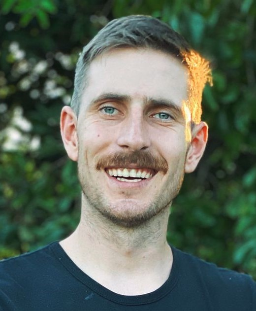

<div class="flex justify-center">
  <div class="container">
    <div class="mb-5">
      <div class="text-4xl mb-5">
        Welcome!
      </div>
      <div class="text-2xl font-light flex">
        My name is Gustavo Reimche and I am <ngx-typed-js class="text-primary ml-2" ngxTyped
          [strings]="['Frontend Developer']"><span class="typing"></span></ngx-typed-js>
      </div>
    </div>
    <div *ngIf="!imageLoaded" class="flex flex-col xl:flex-row gap-20">
      <app-loading width="500px" height="700px"></app-loading>
      <app-loading width="500px" height="700px"></app-loading>
    </div>
    <div [ngClass]="imageLoaded ? 'flex flex-col justify-center xl:flex-row gap-10' : 'hidden'">
      <div>
        
      </div>
      <div class="flex-1 xl:text-xl font-thin max-w-[688px] text-justify">
        <p>
          As an experienced Full Stack developer, I have advanced skills in Angular, HTML, CSS, JavaScript, Node.js,
          Java, and
          Spring Boot. My military experience has provided me with leadership, teamwork, and problem-solving skills.
          Currently, as
          a freelancer, I lead a team of 4 developers in full-stack projects.
        </p>

        <p>
          I have expertise in building RESTful APIs, databases, and authentication. I stay up to date with the latest
          web
          development trends and I am committed to delivering high-quality products. My passion for innovative
          solutions
          and
          strong frontend and backend skills enable me to tackle complex challenges and contribute to successful
          projects.
        </p>

        <p>
          I approach complex challenges with a methodical and results-oriented mindset, utilizing my knowledge in both
          frontend
          and backend development to create efficient, scalable, and high-quality applications. My problem-solving
          ability,
          teamwork skills, and effective communication make me a valuable asset in any project.
        </p>
        <p>
          I am constantly seeking new opportunities for learning and professional growth, and I am dedicated to
          delivering
          excellent products that meet clients' needs and exceed their expectations.
        </p>

        I would be happy to assist with any further questions or provide additional information you may need!
        <div class="mt-10 mr-4">
          View my resume:
          <a class="py-2 px-2 bg-primary rounded-lg font-black shadow-xl"
            href="https://1drv.ms/b/s!AgKWQWkcNOIErcZAz03di24kYyC_-Q?e=FXce6V" target="_blank">VISIT ONLINE</a>
        </div>
      </div>
    </div>
  </div>
</div>